السلسلة 17
السيارة (صنف B) · 40 سؤال بالصوت. حاول تجاوب بوحدك، من بعد شوف الجواب.
السؤال 1
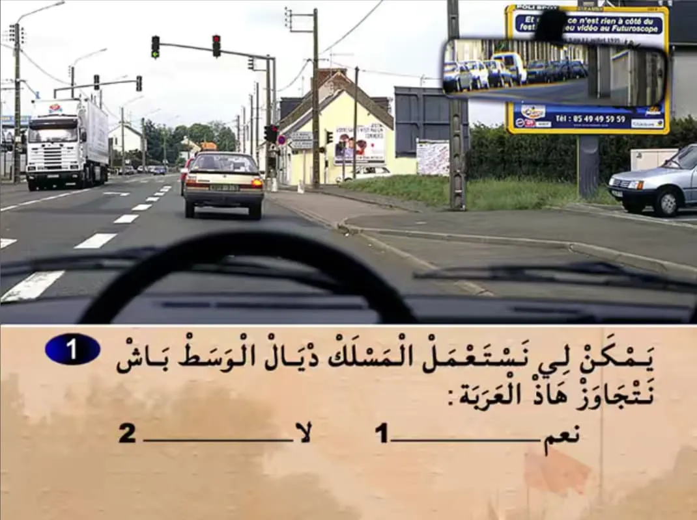
بيّن الجواب
الجواب الصحيح: 2
في هذه الحالة كما نرى فإن العربة التي أمامي سوف تنعطف على اليمين وقامت بتشغيل مؤشر تغيير الاتجاه إلى اليمين، يوجد مسلك ثاني على اليسار والتّشوير الأفقي الخط المتقطّع يسمح لي بتجاوزها على اليسار بما أنه لا يوجد عربة قادمة من الخلف، لكن المسلك الثاني على اليسار يحتوي على تشوير أفقي إجباري سهم مرسوم على الأرض يجبرني على الانعطاف إلى اليسار إذا قمت باستعماله يعني سوف أضطر إلى الانعطاف الى اليسار لو قمت باستعماله والإشارة الضوئية خضراء. إذن في هذه الحالة يجب عليّ انتظار العربة التي أمامي لكي تنعطف إلى اليمين وبعد ذلك يمكنني إكمال السير إلى الأمام، لأنه لو قمت بإستعمال المسلك الذي على اليسار سوف أكون مجبر للانعطاف على اليسار ولا يمكنني إكمال السّير إلى الأمام.
السؤال 2
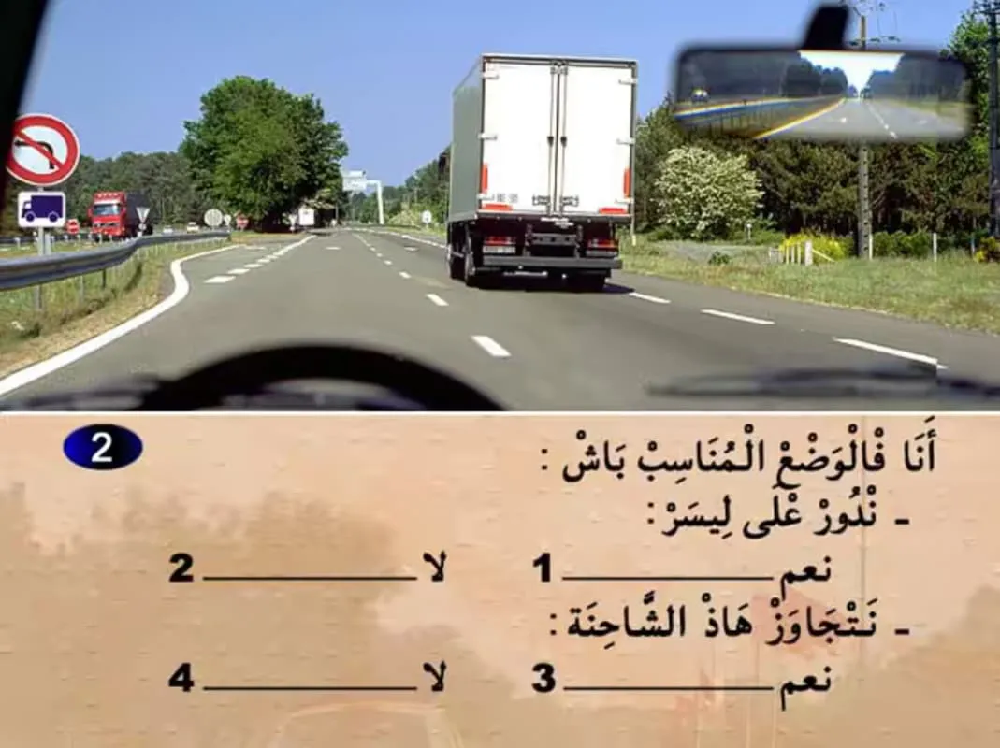
بيّن الجواب
الجواب الصحيح: 1 و 3
العلامة الطرقية العمودية التي تمنع تغيير الاتجاه إلى اليسار فهي تخص الشاحنات ولا تخصني، في هذه الحالة أنا في وضع مناسب لكي أنعطف إلى اليسار كما أنني أيضا في وضع مناسب لتجاوز هذه الشاحنة ولا يوجد شيئ يمنعني من عملية التجاوز لأنه مسلك ثاني خاص بي بحكم تواجدنا في طريق سيّار.
السؤال 3
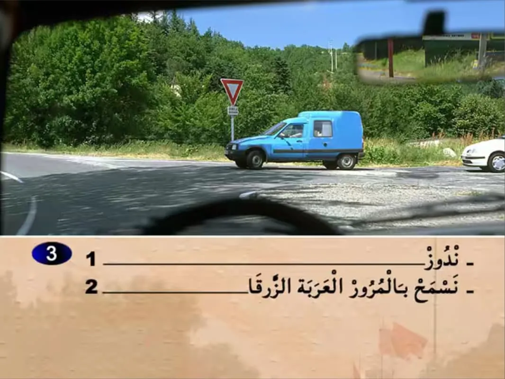
بيّن الجواب
الجواب الصحيح: 1
العربة الزرقاء لديها علامة طرقية تشير إلى أنها ليس لها حق الأسبقية ويجب عليها إعطائي حق الأسبقية والسماح لي بالمرور لأنها لا تمتلك حق الأسبقية، إذن أقوم بالمرور.
السؤال 4
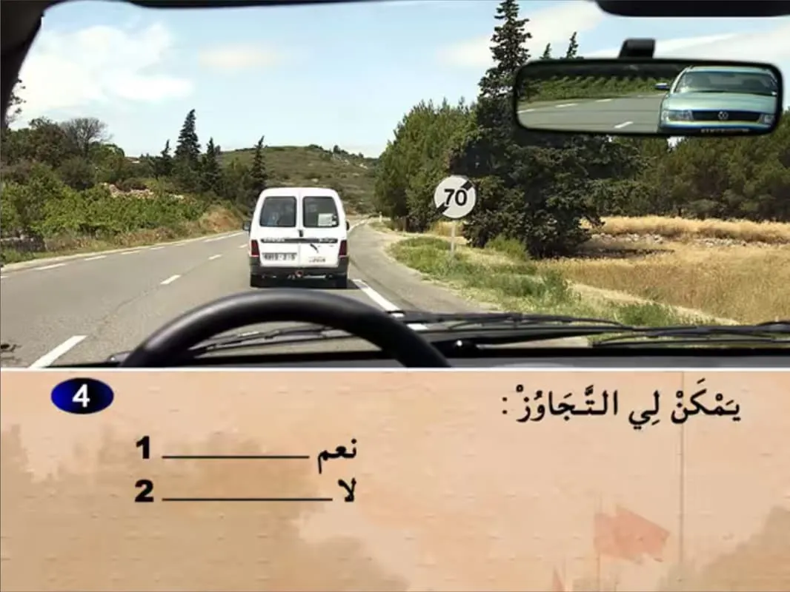
بيّن الجواب
الجواب الصحيح: 2
انتهاء تحديد السرعة، كما أن التّشوير الأفقي يسمح لي بالتجاوز الخط المتقطع والسيارة التي في الخلف لا تستعد لي التجاوز إذن يمكننا التجاوز؟ لكن لا يمكننا التجاوز مع وجود كل هذه الشروط لأننا نتواجد في منعرج ولا توجد وضوح للرؤية (انعدام الرؤية) ولا يمكننا معرفة هل هنالك سيارات قادمة في الاتجاه المعاكس، لذلك لا يمكنني التجاوز.
السؤال 5
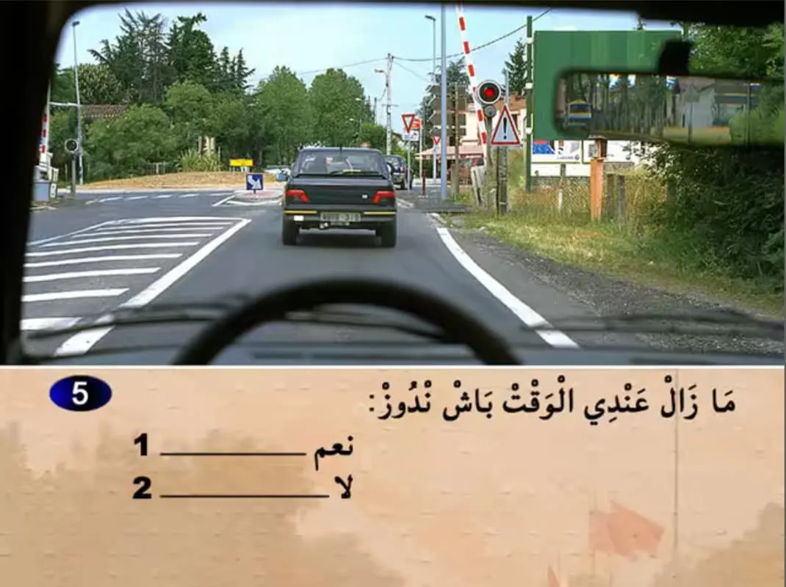
بيّن الجواب
الجواب الصحيح: 2
ليس لدينا الوقت للمرور، لأن الإشارة المرور حمراء ويجب علينا الوقوف حتى يصبح الضوء أخضر.
السؤال 6
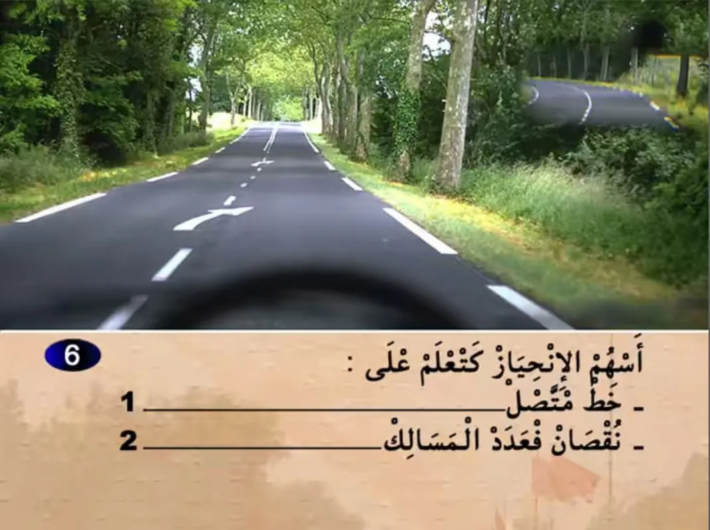
بيّن الجواب
الجواب الصحيح: 1
بالنسبة لتّشوير الأفقي أسهم الانحياز المرسومة على الأرض فهي تعني قرب الخط المتّصل.
السؤال 7
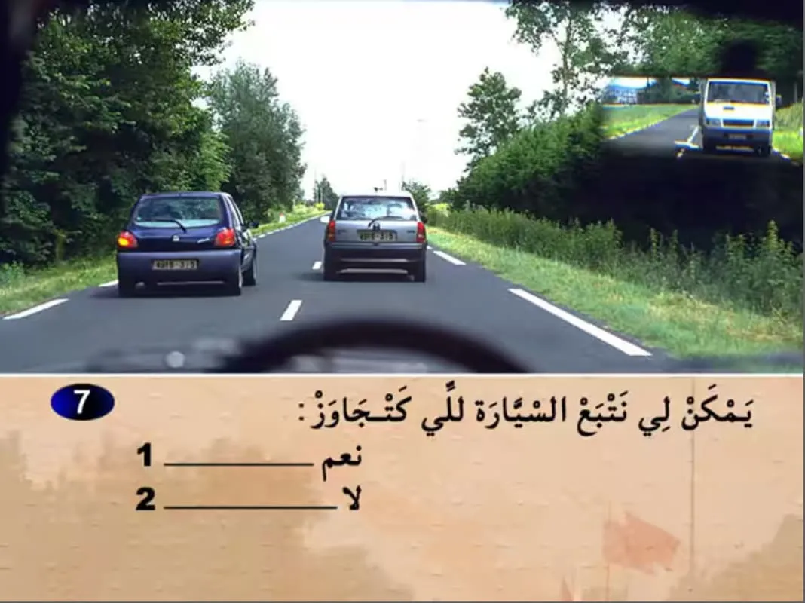
بيّن الجواب
الجواب الصحيح: 2
في طريق وطنية أو في طريق ذات اتجاهين، فلا يمكننا أن نتبع سيارة أخرى تقوم بعملية التجاوز (عكس الطريق السّيار).
السؤال 8
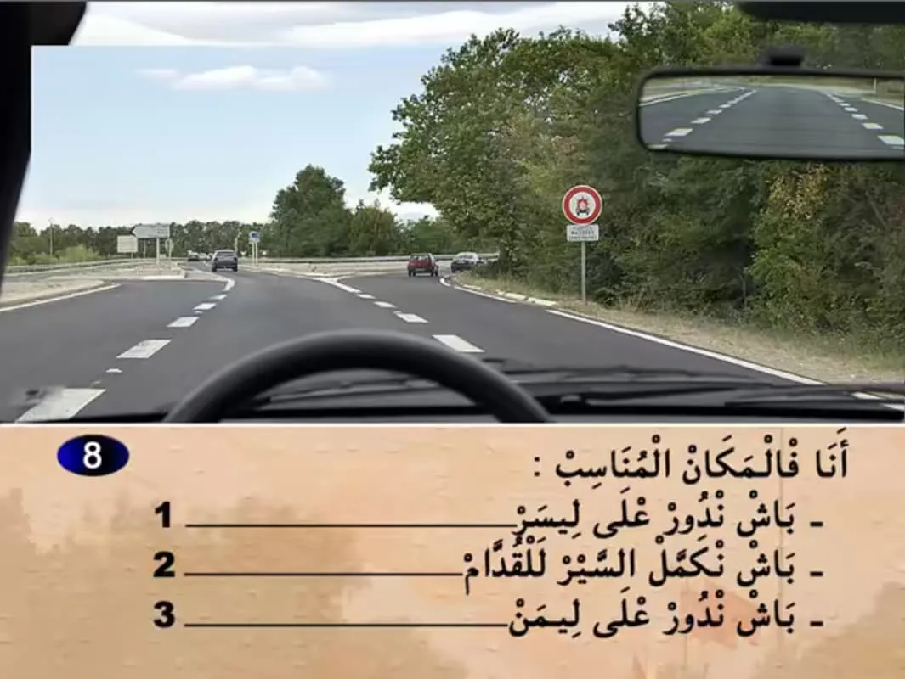
بيّن الجواب
الجواب الصحيح: 2
بالنسبة للمسلك الذي أتواجد فيه الان فهو مسلك للعربات التي تريد إكمال السير للأمام. (المسلك الموجود على اليمين فهو خاص للعربات التي تريد الانعطاف لليمين، والمسلك الموجود على اليسار فهو خاص بالعربات التي تريد الانعطاف إلى اليسار).
السؤال 9
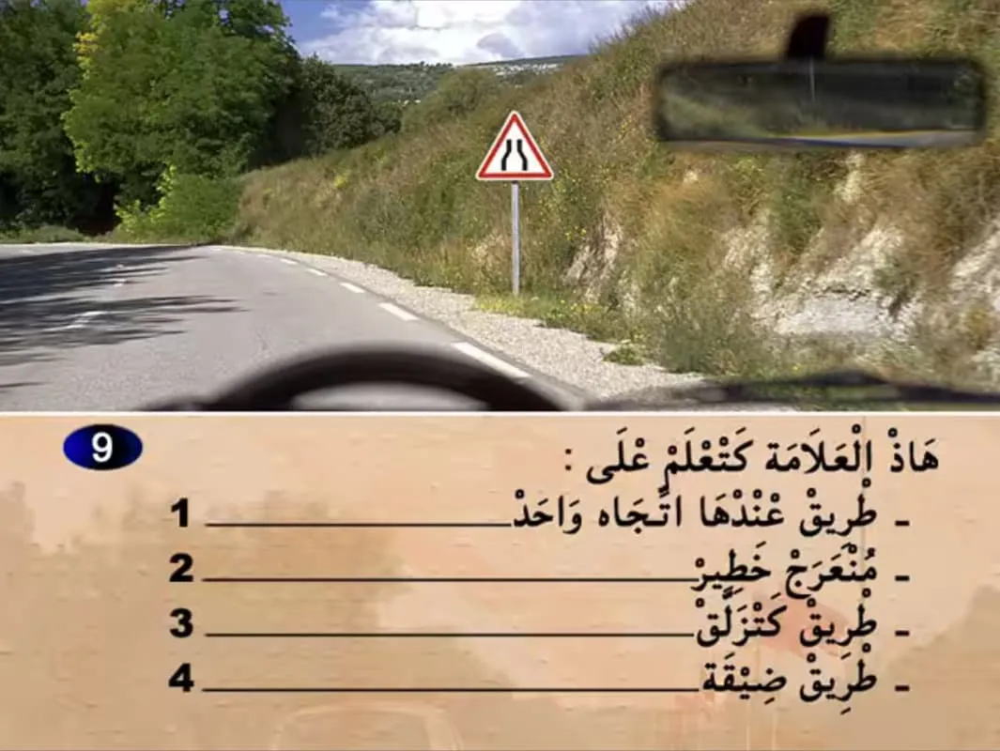
بيّن الجواب
الجواب الصحيح: 4
بالنسبة للعلامة الطّرقية فهي تشير إلى خطر على بعد 150 متر وهي تشير إلى خطر أن الطريق ضيقة.
السؤال 10
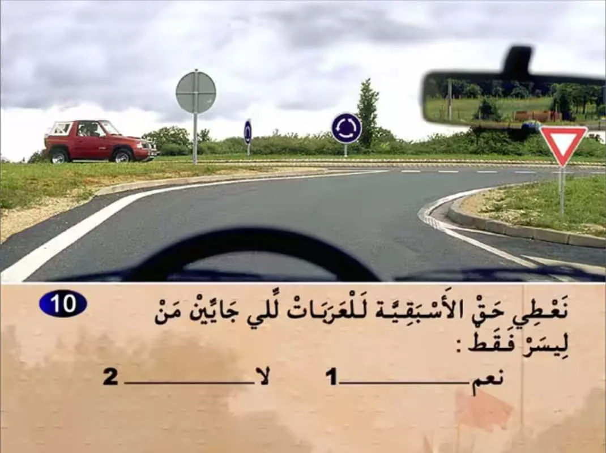
بيّن الجواب
الجواب الصحيح: 1
في الرومبوان (المدار) نعطي حق الأسبقية للعربات القادمة من الجهة اليسرى فقط. (عكس ملتقى الطرق).
السؤال 11
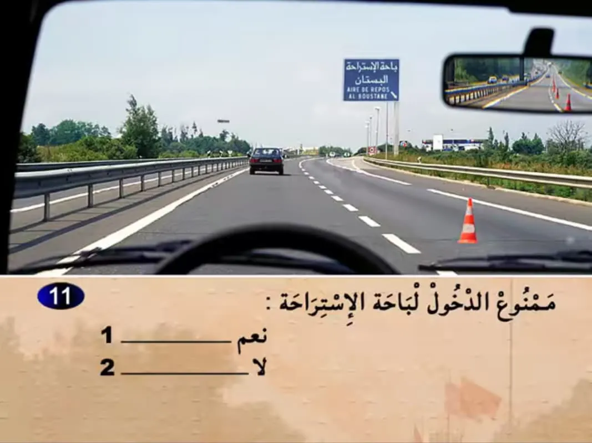
بيّن الجواب
الجواب الصحيح: 2
غير ممنوع الدخول إلى باحة الاستراحة، كما تشير الصورة فكانت هنالك أشغال منعتني من الدخول مسبقا لباحة الاستراحة، لكن الان لدي بعض الوقت الكافي لكي أستطيع الدخول كما أنه لا توجد سيارة من خلفي، إذن غير ممنوع الدخول إلى باحة الاستراحة.
السؤال 12
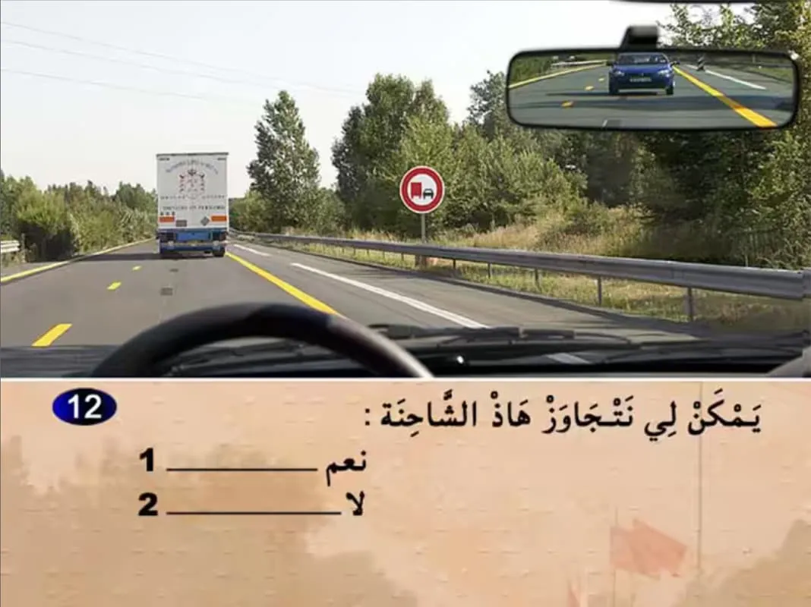
بيّن الجواب
الجواب الصحيح: 1
عند وجود خط متّصل أقصى اليسار فهذا يعني أن الطريق ذات إتجاه واحد، وعندما تكون الطّريق ذات إتجاه واحد فيمكننا التجاوز حتى مع انعدام الرؤية لانه لا توجد عربات قادمة في الاتجاه المعاكس، بالنسبة للعلامة الطرقية العمودية فهي تمنع عملية التجاوز بالنسبة للشاحنات وليس للسيارات.
السؤال 13
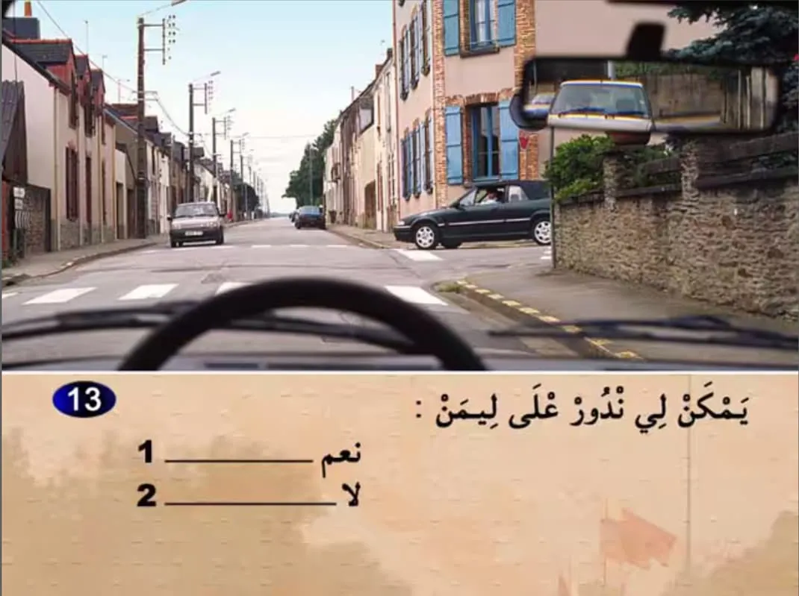
بيّن الجواب
الجواب الصحيح: 1
نحن نتواجد في ملتقى الطرق، كما هو واضح في الصورة فإذا أردت تغيير الاتجاه إلى الجهة اليمنى فيمكنني ذلك، الخط المتصل الذي تقف عنده السيارة فهو يعني علامة قف بالنسبة لها وهو غير مكتمل أي على طول الطريق، فقط النصف وهذا يعني أنه يمكنني تغيير الاتجاه إلى الجهة اليمنى. لو كان الخط متصل على طول تلك الطريق في هذه الحالة لا يمكنني تغيير الاتجاه إلى اليمين لأنه يعني في هذه الحالة على أن الطريق ذات إتجاه واحد ولا يمكنني المرور وتغيير الاتجاه. ويصبح ممنوع، إذن في هذه الحالة بما أن الخط مرسوم ويصل الى الوسط فقط فيمكنني تغيير الاتجاه الى اليمين.
السؤال 14
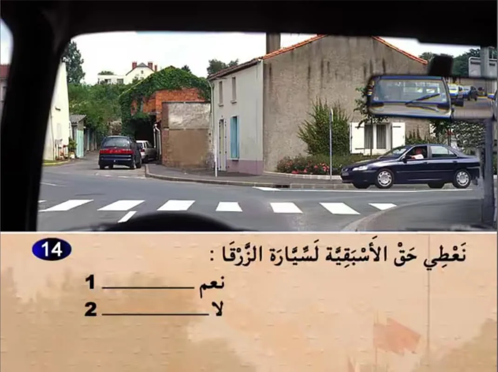
بيّن الجواب
الجواب الصحيح: 2
في ملتقى الطرق فإن الأسبقية دائما للعربات القادمة من اليمين، لكن في وجود علامة قف بالنسبة للعربات المتواجدة على اليمين تعطيني حق الأسبقية في هذه الحالة. توجد علامة قف بالنسبة للعربة المتواجدة على الجهة اليمنى، ايظا يوجد خط أفقي مرسوم على الأرض يعني كذلك علامة قف بالنسبة لتلك السيارة، إذن لا أعطي حق الأسبقية للسيارة الزرقاء.
السؤال 15
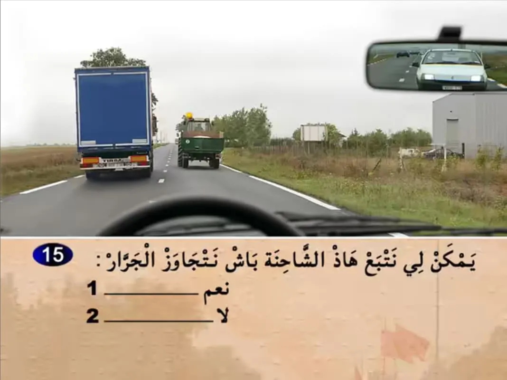
بيّن الجواب
الجواب الصحيح: 2
في طريق وطنية أو في طريق ذات اتجاهين فلا يمكننا أن نتبع الشاحنة تقوم بعملية التجاوز بالنسبة للجرّار على الرغم من أن السرعة البطيئة للجرّار (عكس الطريق السّيار).
السؤال 16
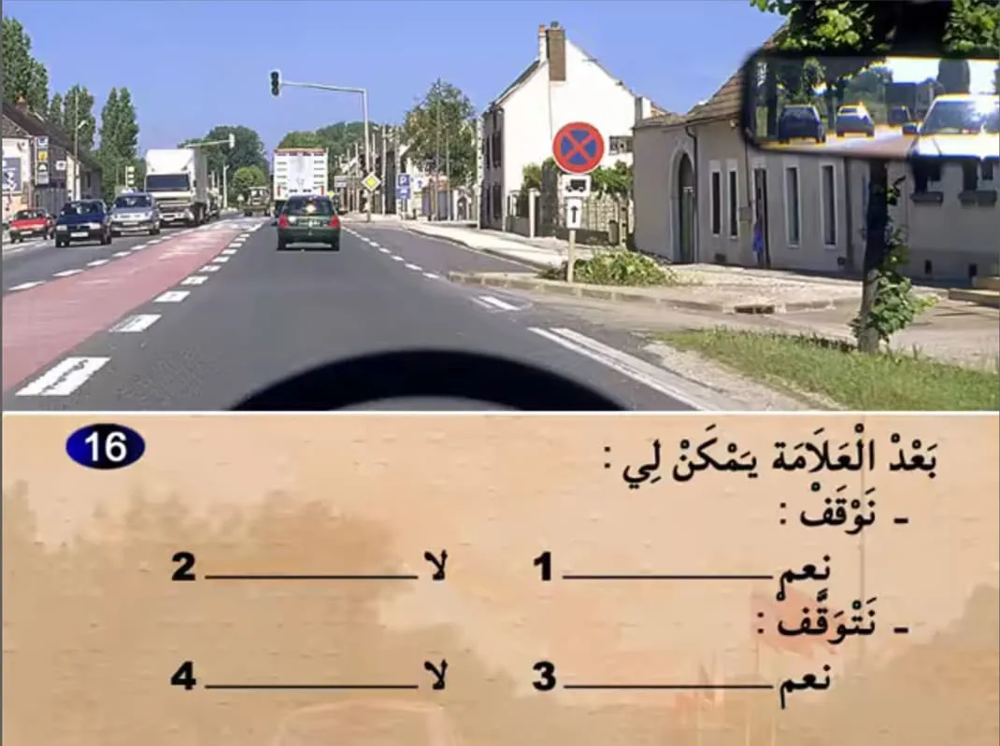
بيّن الجواب
الجواب الصحيح: 1 و 3
العلامة الطرقية العمودية تعني منع الوقوف والتوقّف، ويوجد علامة تكميلية صورة شاحنة، إذن علامة المنع الخاصة بالوقوف والتوقّف فهي تخص الشاحنات وليس السيارات. إذن بعد العلامة يمكنني الوقوف والتوقّف.
السؤال 17
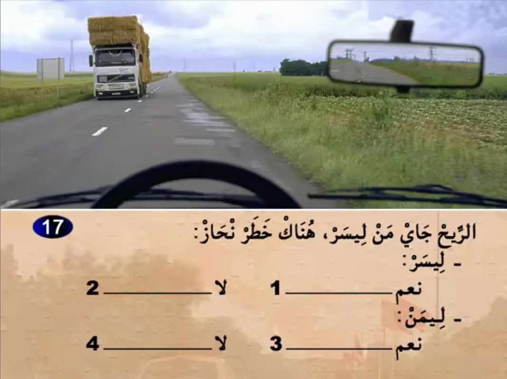
بيّن الجواب
الجواب الصحيح: 1 و 3
بالنسبة لهذا النوع من الأسئلة فهي أسئلة فخ، فالرّياح تأتي من الجهتين اليمنى واليسرى وليس من جهة واحدة، لذلك يوجد خطر الانحياز لليسار وايظا خطر الانحياز لليمين.
السؤال 18
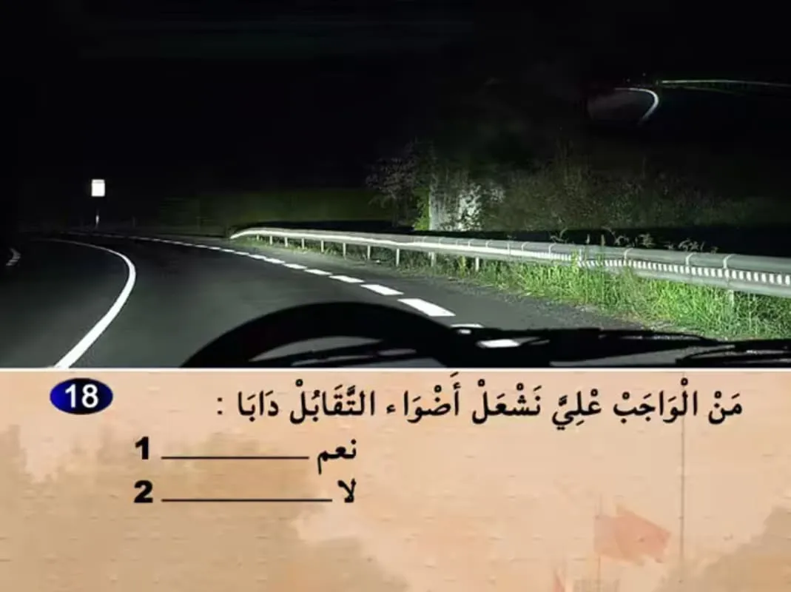
بيّن الجواب
الجواب الصحيح: 2
يمكنني أن أقوم بتشغيل أضواء التقابل في المنعرج لكن في هذه الحالة فإن المنعرج إنتهى (الحاجز الحديدي على اليمين يشير إلى ذلك) لذلك ليس من الواجب عليّ تشغيل أضواء التّقابل الان.
السؤال 19
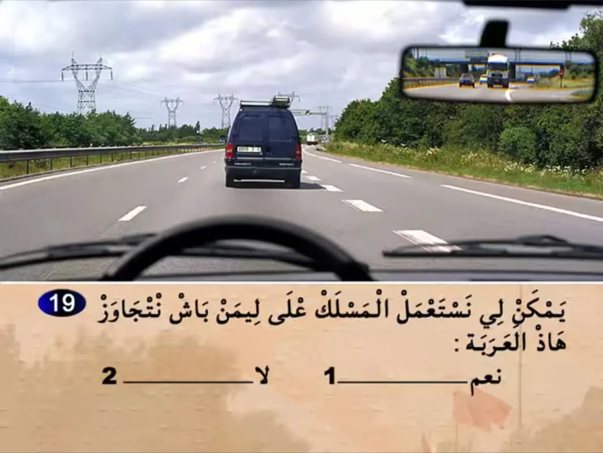
بيّن الجواب
الجواب الصحيح: 2
بالنسبة للمسلك المتواجد على اليمين فهو مسلك يخص العربات البطيئة مثل الجرّار أو الشاحنات أو الالات الخ.. العربات التي تسير ب 60 كلم في الساعة (الخط المتقطّع عريض)، كما أن التجاوز من الجهة اليمنى ممنوع، التجاوز نقوم به من الجهة اليسرى.
السؤال 20
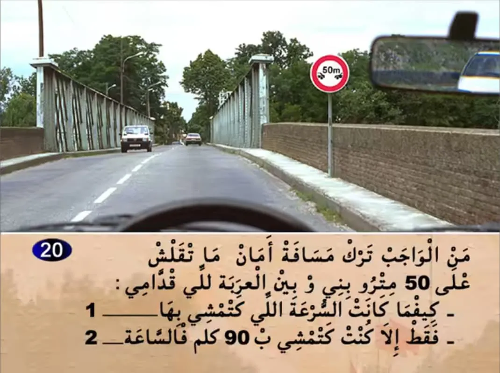
بيّن الجواب
الجواب الصحيح: 1
العلامة الطرقية العمودية فهي تعني المنع وهي تطبّق من عند العلامة، تعني الإجبار على ترك مسافة أمان لا تقل عن 50 متر بيني وبين العربة التي توجد أمامي مهما كانت السرعة التي أسير بها.
السؤال 21
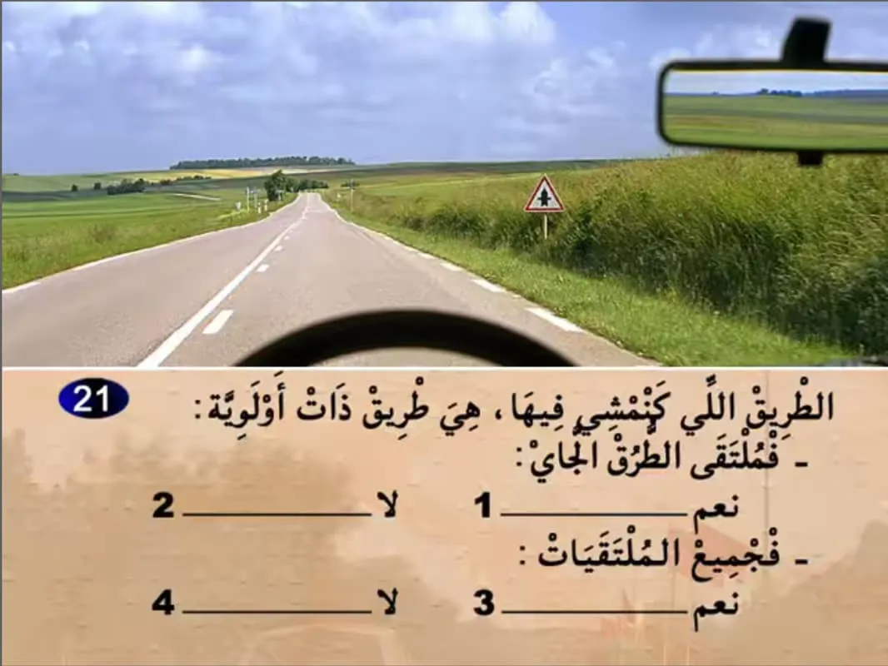
بيّن الجواب
الجواب الصحيح: 1 و 4
العلامة الرقية تعني أنه لدي حق الأسبقية لذلك فإن الطريق التي أسير فيها الان هي ذات أولوية بالنسبة لي فقط في ملتقى الطرق القادم وليس في جميع ملتقيات الطرق.
السؤال 22
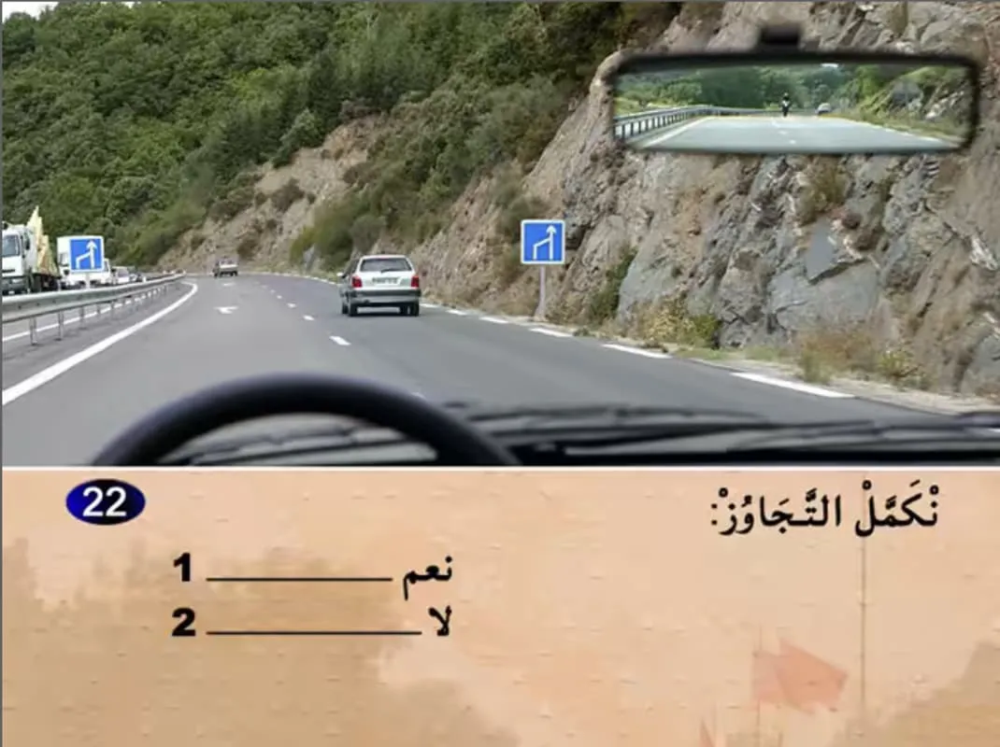
بيّن الجواب
الجواب الصحيح: 2
في هذه الحالة لا يمكنني أن نكمل التجاوز يجب علينا أن نقوم بالانحياز إلى المسلك المتواجد على اليمين، لأنه يوجد تشوير أفقي مرسوم على الأرض وهي أسهم الانحياز والتي تجبرني على الانحياز إلى اليمين وذلك لأنها تعلمني بقرب الخط المتّصل وكذلك لأنه يوجد تشوير عمودي يشير إلى نقصان عدد المسالك. لذلك لا يمكنني إكمال عملية التجاوز.
السؤال 23
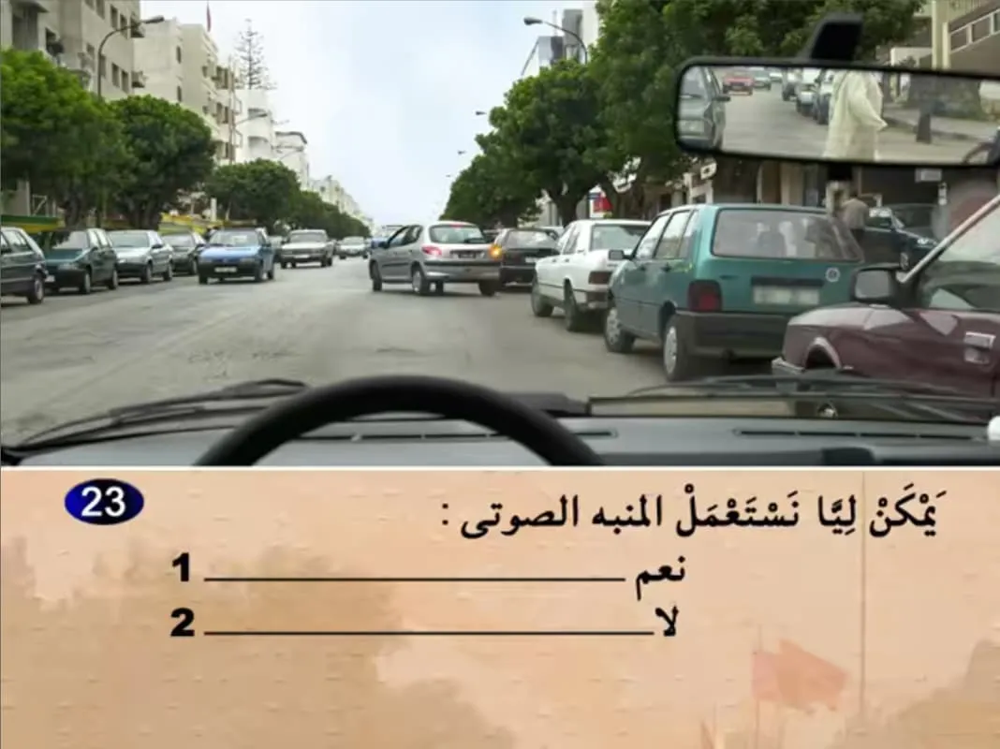
بيّن الجواب
الجواب الصحيح: 2
داخل المدنية فالقانون يمنع استعمال المنبّه الصوتي إلاّ للضرورة وفي حالة وجود خطر، في هذه الحالة لا يوجد خطر، لذلك لا داعي لاستعمال المنبّه الصوتي.
السؤال 24
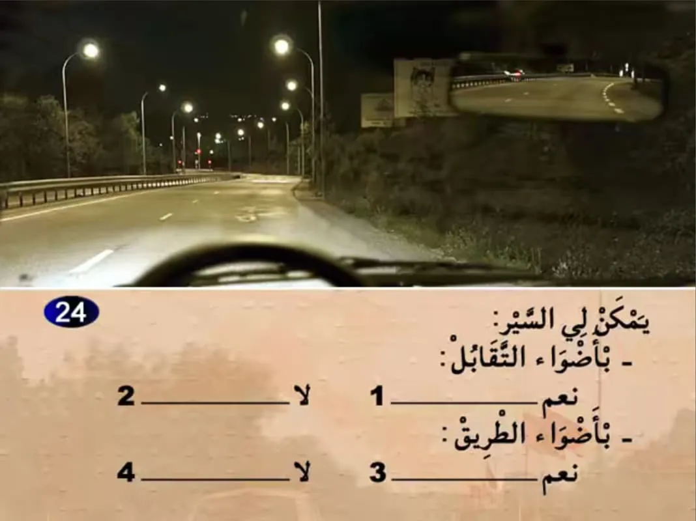
بيّن الجواب
الجواب الصحيح: 1 و 4
يمكننا استعمال أضواء التقابل للسير لأنه في المدينة من الواجب عليّ السير بأضواء التقابل، لكن لا يمكننا إستعمال أضواء الطريق لأنه ممنوع.
السؤال 25
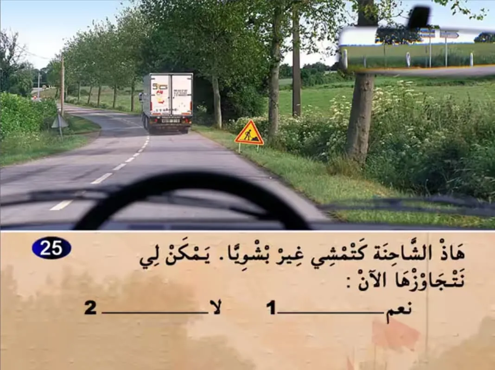
بيّن الجواب
الجواب الصحيح: 2
بالرغم من أن الشّاحنة تسير ببطئ و التّشوير الأفقي الخط المتقطّع يسمح لنا بالتّجاوز فلا يمكننا أن نقوم بتجاوز الشاحنة لأنه توجد علامة عمودية تشير إلى وجود أشغال لذلك يجب الإنقاص من السرعة والانتباه لأنه لا نعلم ما الذي سوف نجده من أشغال أثناء الطريق، لذلك لا يمكننا أن نتجاوز الشاحنة الان.
السؤال 26
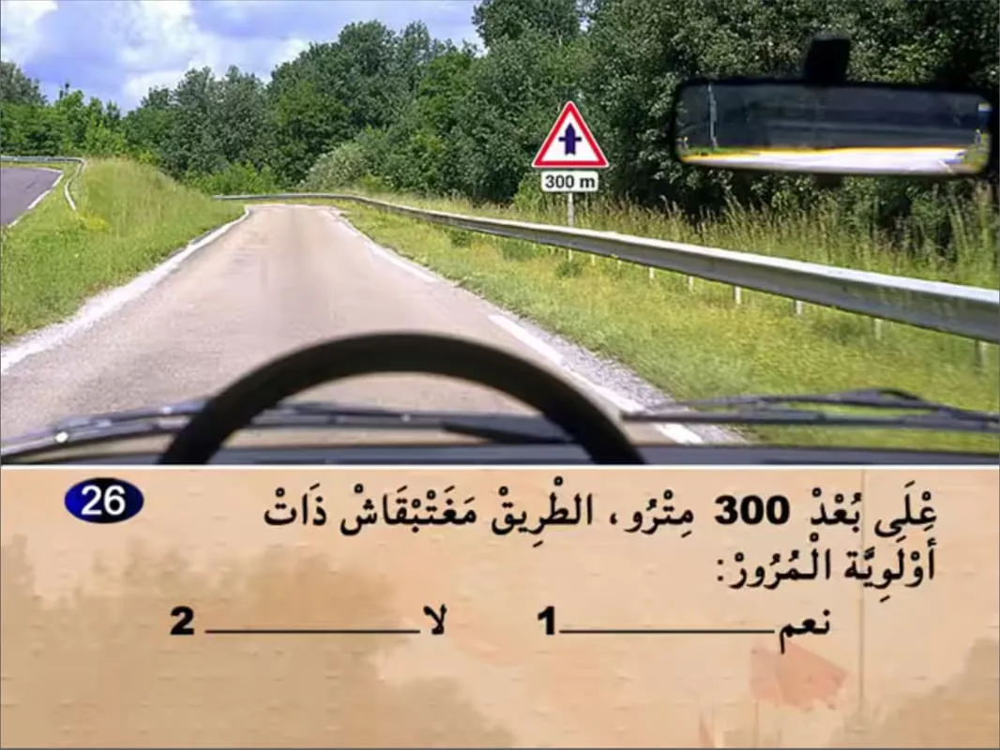
بيّن الجواب
الجواب الصحيح: 2
بالعكس العلامة الطرقية تعني أنه بعد 300 متر سوف تصبح الطريق ذات أولوية بالنسبة لي كسائق.
السؤال 27
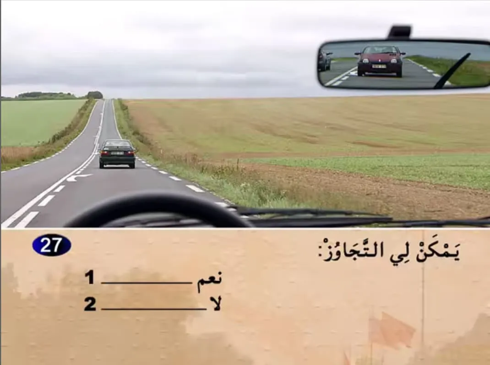
بيّن الجواب
الجواب الصحيح: 2
التّشوير الأفقي الأسهم المرسومة على الأرض تعني الانحياز إلى الجهة اليمنى والتي تعني بدورها أنه سوف يصبح الخط المتقطّع متّصل بعد قليل، لذلك لا يمكنني التجاوز.
السؤال 28
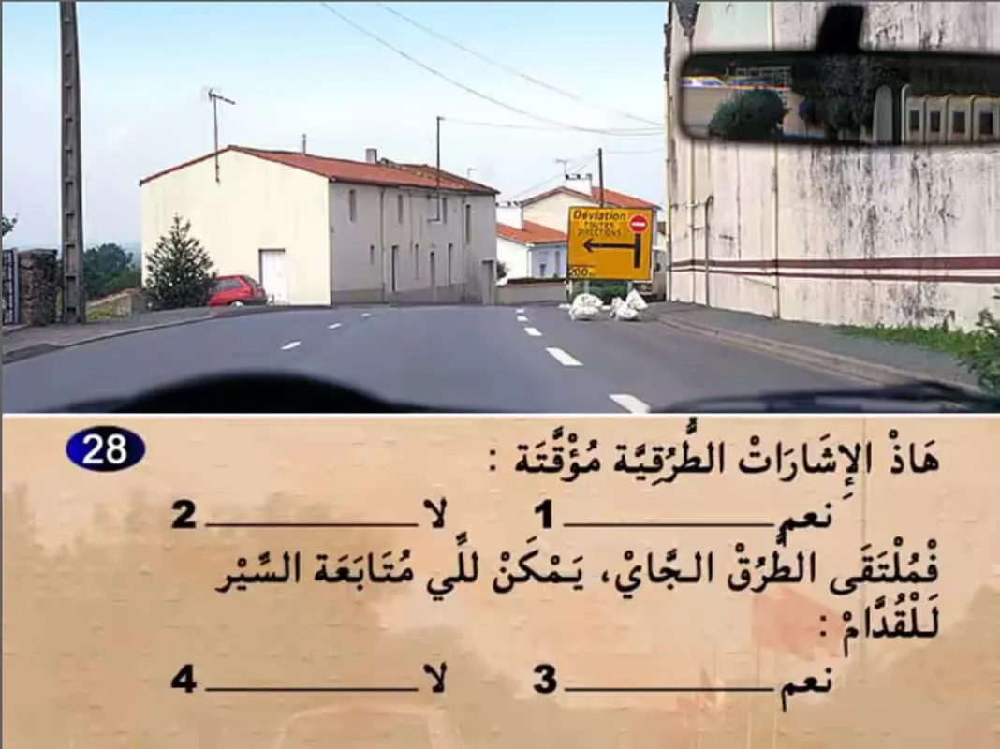
بيّن الجواب
الجواب الصحيح: 1 و 4
بالنسبة للعلامات الطّرقية التي تكون ذات لون أصفر فهي علامات طرقية مؤقتة، في هذه الحالة هذه العلامة الطّرقية تعني أنه في ملتقى الطرق القادم لا يمكنني متابعة السير للامام لأن العلامة الطرقية تشير إلى ذلك وتشير إلى الانعطاف إلى اليسار في ملتقى الطرق القادم.
السؤال 29
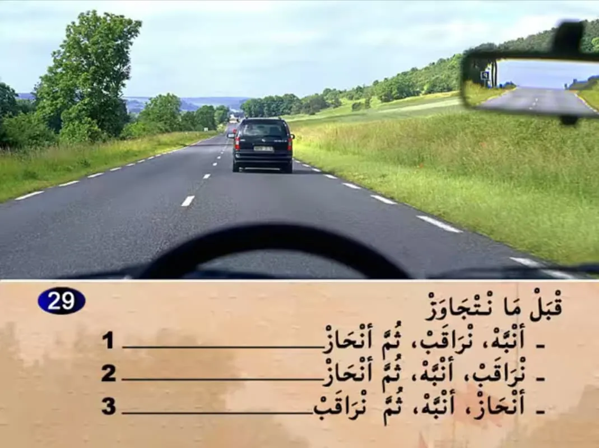
بيّن الجواب
الجواب الصحيح: 2
أول شيئ نقوم به قبل عملية التّجاوز هو مراقبة الطريق هل هنالك سيارة تقوم بتجاوزنا، هل التّشوير الطرقي تسمح لنا بعملية التجاوز وهل كذلك يوجد سيارات قادمة في الاتجاه المعاكس، بعد ذلك نقوم بتنبيه السيارة التي أريد أن أقوم بتجاوزها يا إما تنبيه ضوئي أو صوتي، وبعد ذلك أنحاز إلى الجهة اليسرى لكي أقوم بعملية التجاوز. الإجابة الصحيحة رقم 2.
السؤال 30
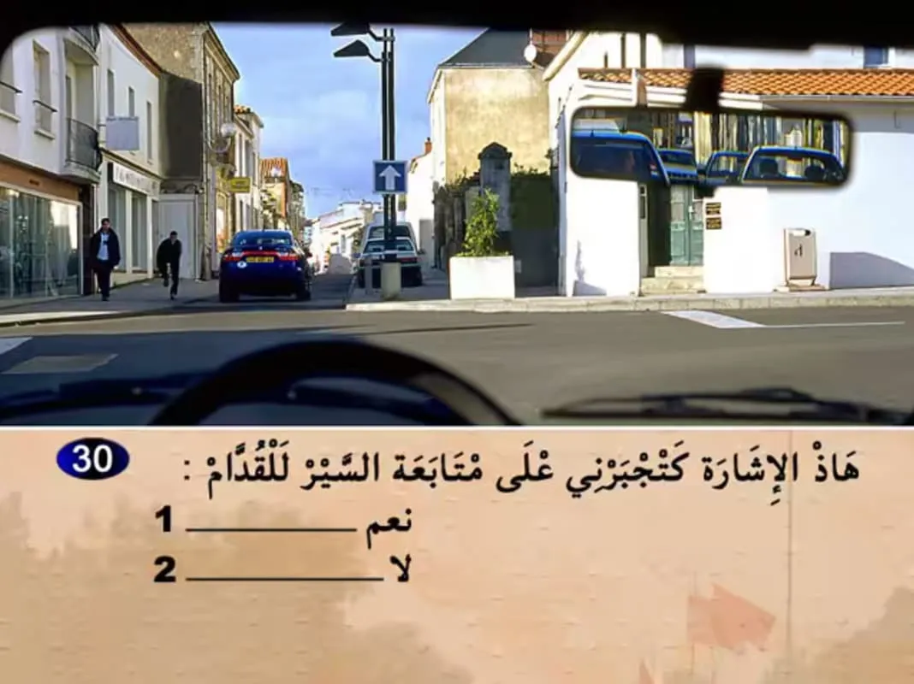
بيّن الجواب
الجواب الصحيح: 2
يمكننا الانعطاف إلى اليمين إذا أردت ذلك، بالنسبة لهذه العلامة الطّرقية فهي لا تعني الإجبار ولكنها تعني أن الطريق ذات إتّجاه واحد. إذن العلامة الطّرقية لا تجبرني على متابعة السير للأمام.
السؤال 31
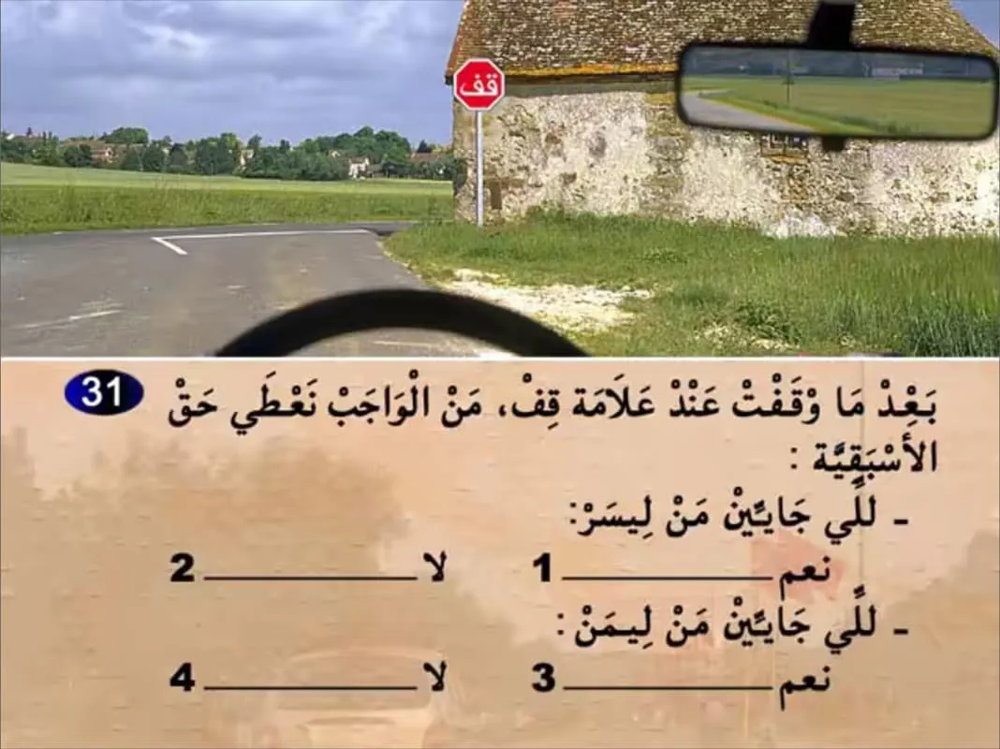
بيّن الجواب
الجواب الصحيح: 1 و 3
العلامة الطرقية قف فهي تعني الوقوف الإجباري وهي تجبرنا على الوقوف وعلى إعطاء حق الأسبقية بالنسبة للعربات القادمة من الجهة اليمنى وكذلك إعطاء حق الأسبقية بالنسبة للعربات القادمة من الجهة اليسرى.
السؤال 32
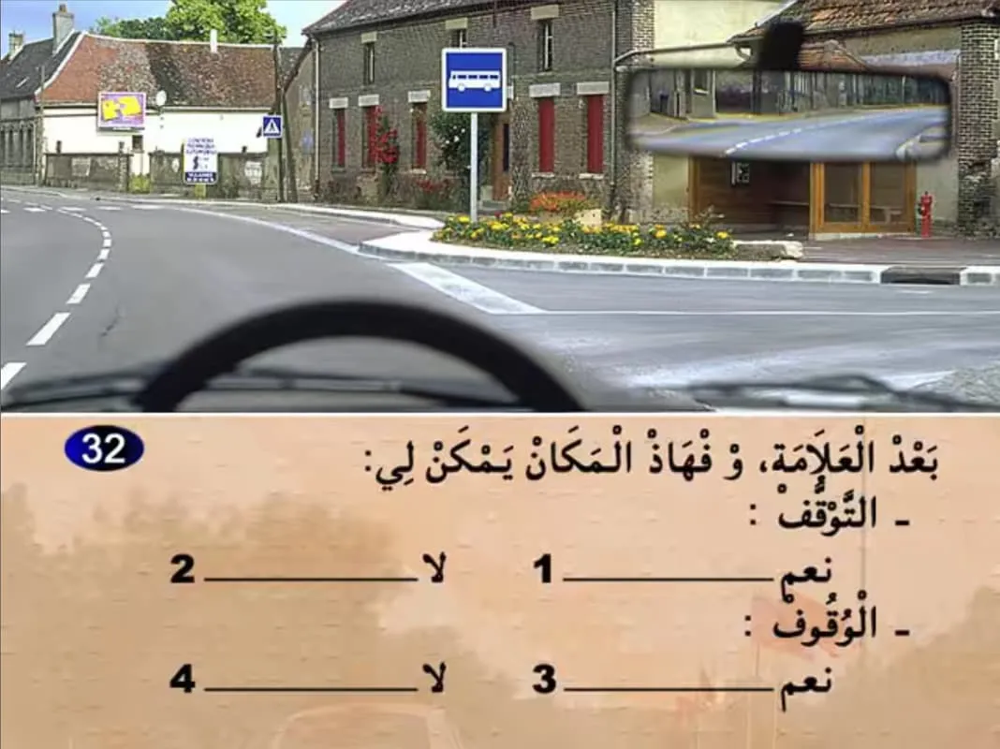
بيّن الجواب
الجواب الصحيح: 2 و 4
بالنسبة للعلامة الطرقية الخاصة بالنقل فهي تشير إلى مكان خاص بالنقل، وبالنسبة للأماكن الخاصة مثل هذه الحالة فلا يمكننا الوقوف ولا يمكننا كذلك التوقّف لأنه مكان خاص.
السؤال 33
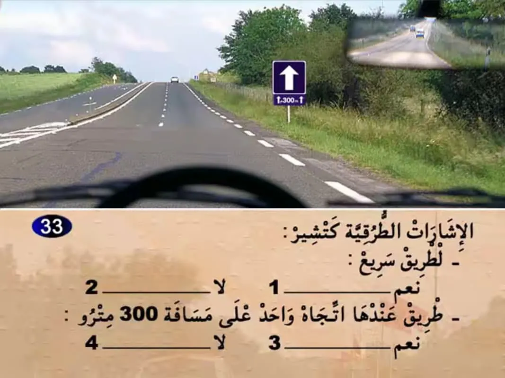
بيّن الجواب
الجواب الصحيح: 2 و 3
بالنسبة للإشارة الطّرقية فهي تعني أن الطريق سوف يكون على إتجاه واحد وليس لطريق سريع، بالنسبة للأسهم الموجودة في الإشارة التكميلية 300 متر فهي تعني على مسافة و تعني كذلك على إمتداد و تعني كذلك على طول (لديها نفس المعنى)، إذن في هذه الحالة الإشارة الطرقية لا تشير إلى طريق سريع، ولكنها تشير إلى أن الطريق سوف تصبح ذات إتّجاه واحد على مسافة 300 متر.
السؤال 34
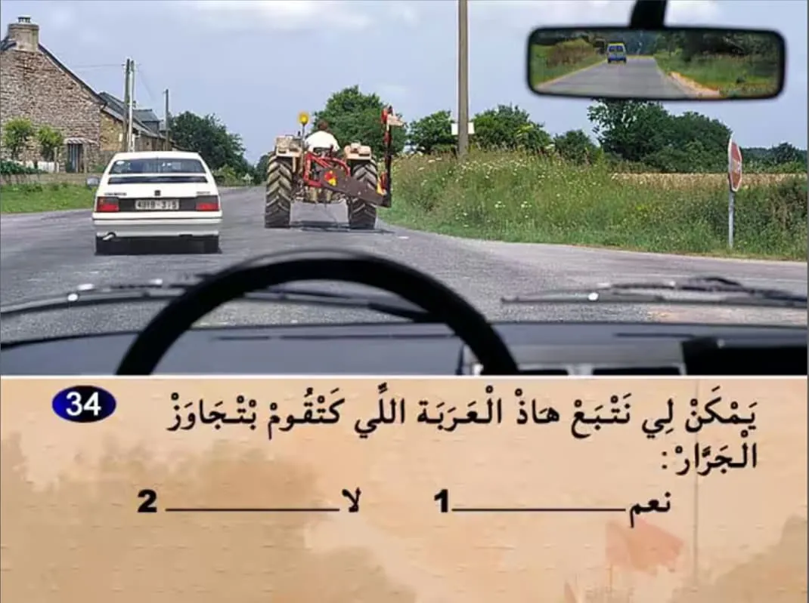
بيّن الجواب
الجواب الصحيح: 2
أول شيئ نتواجد في ملتقى الطّرق، وفي ملتقى الطّرق ممنوع التّجاوز، ثاني شيئ عندما نتواجد في طريق ذات اتجاهين فلا يمكننا إتباع عربة تقوم بعملية التجاوز (عكس الطّريق السّيار) إذن لا يمكننا إتباع هذه العربة التي تقوم بعملية التجاوز للجرّار.
السؤال 35
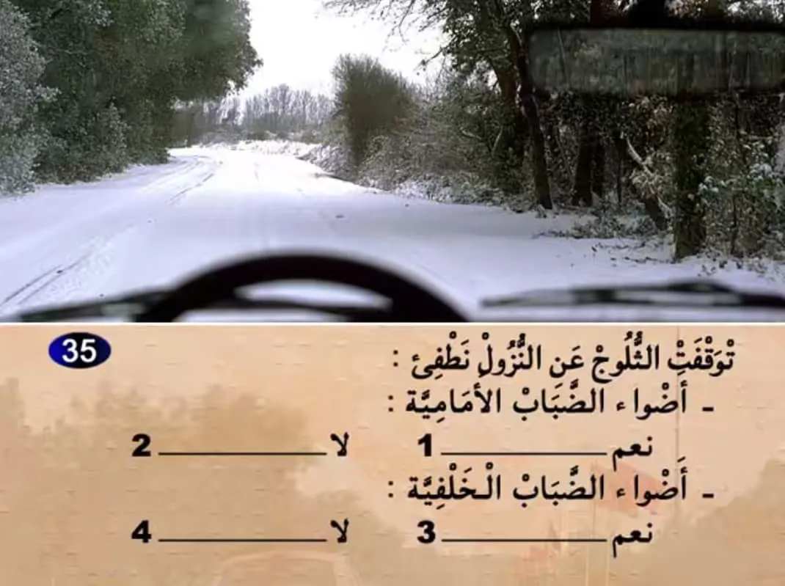
بيّن الجواب
الجواب الصحيح: 1 و 3
إذا توقفت الثلوج عن الهطول فيمكننا إطفاء أضواء الضّباب الأمامية وكذلك الخلفية.
السؤال 36
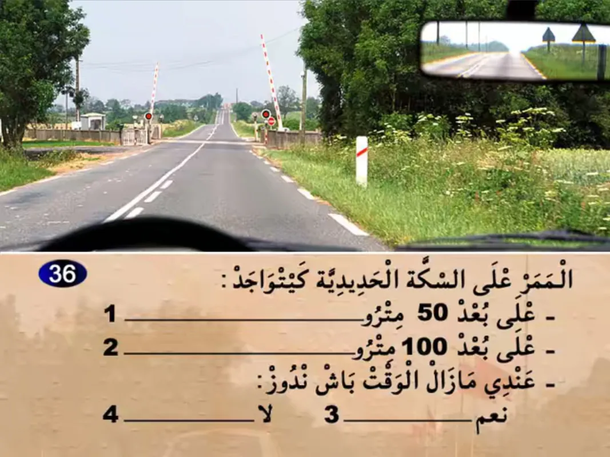
بيّن الجواب
الجواب الصحيح: 1 و 4
عندما تكون هنالك صوى تحتوي على خط أحمر واحد فهذا يعني على بعد 50 متر (لو كان هنالك 2 خطوط حمراء ف على بعد 100 متر، كل خط يشير إلى 50 متر)، كما أن الإشارة الضوئية تحتوي على اللون الأحمر إذن ليس لديّ الوقت للمرور.
السؤال 37
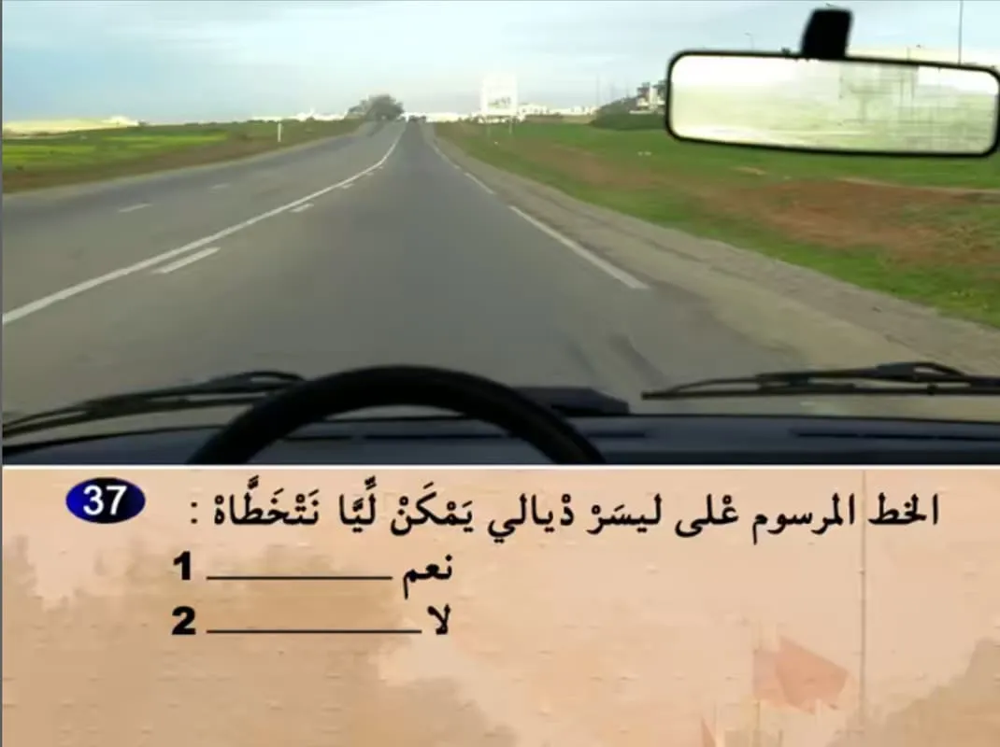
بيّن الجواب
الجواب الصحيح: 1
يوجد 2 خطوط على الجهة اليسرى، ودائما الخط الذي يعنينا في مثل هذه الحالة هو أول خط، الخط الاول بالنسبة لنا هو خط متقطع وبعد ذلك يوجد خط متصل، الخط المتقطع هو الأول يعني يمكنني أن أتخطاه لا مشكلة وبالنسبة للخط المتّصل فهو خاص بالعربات القادمة من الإتّجاه المعاكس، في بعض الحالات يوجد الخط المتصل هو الاول وبعد ذلك الخط المتقطع، في هذه الحالة لا يمكنني أن أتخطّاء. دائما أرى من هو أول خط بالنسبة لي هل متقطع ام متصل.
السؤال 38
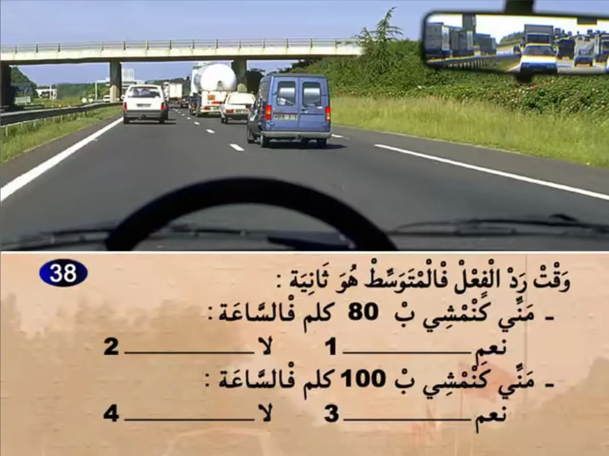
بيّن الجواب
الجواب الصحيح: 1 و 3
بالنسبة لوقت رد الفعل في المتوسط فيقدّر ب ثانية واحدة مهما كانت السرعة التي أسير بها.
السؤال 39
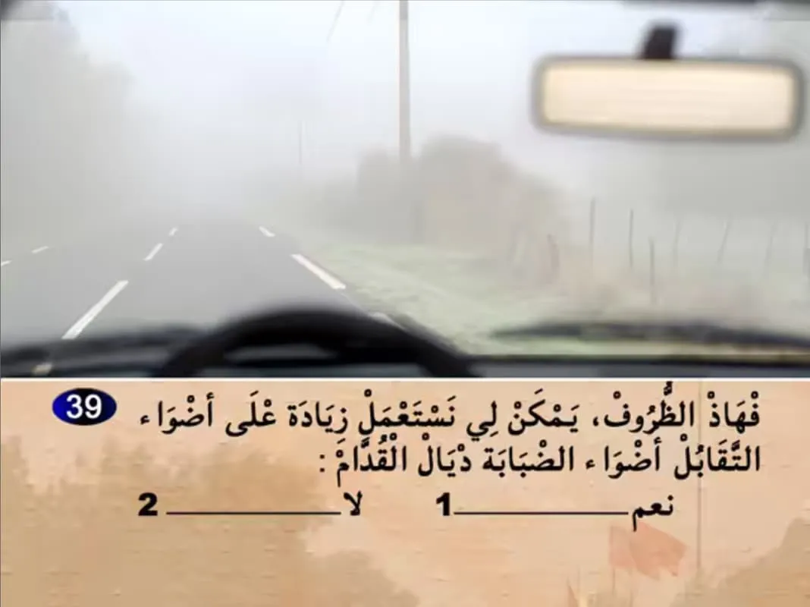
بيّن الجواب
الجواب الصحيح: 1
يوجد ضباب في الطريق، أستعمل أضواء التقابل كما أنه من الواجب عليّ استعمال أضواء الضباب الأمامية والخلفية. (نجيب على السؤال على حسب سياقه حتى وإن كان السؤال يحتوي على اضواء الضباب الأمامية فقط، فنجيب بنعم يمكننا استعمال اضواب الضباب الأمامية).
السؤال 40
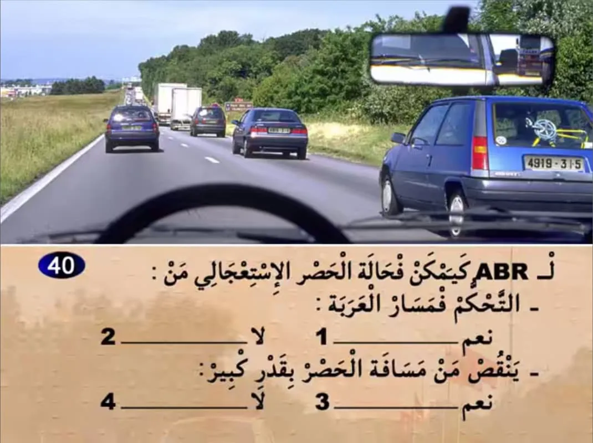
بيّن الجواب
الجواب الصحيح: 1 و 4
بالنسبة ل ABR خاصية في العربة يمكّن في حالة الحصر الإستعجالي من التحكم في مسار العربة بشكل أفضل، كما أنه ليس لديه علاقة بإنقاص مسافة الحصر. الإجابة الصحيحة 1 و 4.